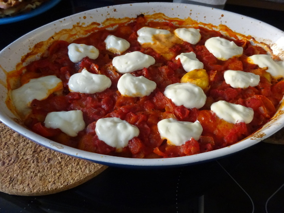

Gnocchi mit gratiniertem Ziegenkäse

-
Zubereitungszeit: ca. 40 Minuten
-
Für 3 Portionen
Zutaten
- 1 Zwiebel
- 1 Dose stückige Tomaten (ca. 400 g)
- 1 EL Keimöl
- 1 TL Brühe
- 1 TL getrockneter Thymian
- 1 TL Zucker
- 500 g Gnocchi
- 150 g Ziegenfrischkäse
- 2 EL Honig
Zubereitung
- Die Zwiebel würfeln und in dem heißen Öl andünsten. Die stückigen
Tomaten und 125 ml Wasser hinzufügen, aufkochen und die Brühe hinzufügen.
Mit Salz, Pfeffer und Zucker abschmecken.
- Die Gnocchi ungegart in eine Auflaufform geben. Die Tomatensoße
gleichmäßig darübergeben. Im vorgeheizten Backofen bei 200° Celsius
circa 30 Minuten backen. Circa 5 Minuten vor dem Ende der Backzeit den
Ziegenfrischkäse zu Nocken formen und auf dem Auflauf verteilen.
- Vor dem Servieren den Auflauf mit Honig beträufeln.